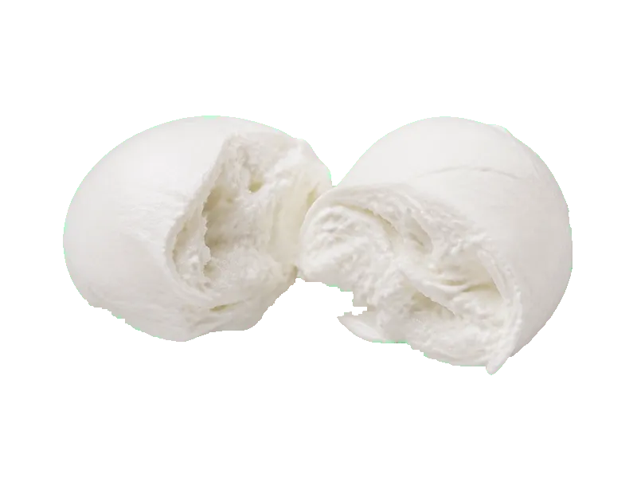

Sery
Ser Mozzarella
Ser Mozzarella: 18 g białka, 254 kcal, 1.5 g węglowodanów i 19 g tłuszczu na 100 g. Kategoria: Sery.
Kalorie254 kcalna 100 g
Białko / proteiny18 g
Węglowodany1.5 g
Tłuszcz19 g
Cena (szac.)~4,79 złza 100 g
Ceny zaktualizowano: maj 2026 (szacunek — ceny w popularnych supermarketach)
Porcja: kula (125g)
| Kalorie | 318 kcal |
|---|---|
| Białko | 22.5 g |
| Węglowodany | 1.9 g |
| Tłuszcz | 23.8 g |
| Cena (szac.) | ~5,99 zł |
Szczegółowe składniki odżywcze na 100 g
| Wartość energetyczna (kalorie) | 254 kcal |
|---|---|
| Białko (proteiny) | 18 g |
| Węglowodany | 1.5 g |
| Tłuszcz | 19 g |
| Tłuszcze nasycone | 12 g |
| Tłuszcze nienasycone | 7 g |
| Witaminy i minerały | Wapń, Witamina B12, Potas |
| Współczynnik kcal / 1 g białka | 14.1 |
| Cena produktu (szac. za 100 g) | ~4,79 zł |
| Cena za 100 g białka (szac.) | ~26,62 zł |